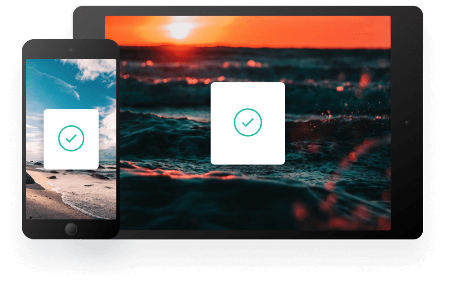

Kopyaladığınız her şeyin geçmişi
Clipboard, kopyaladığınız her şeyi takip etmenizi ve düzenlemenizi sağlar. Tüm cihazlarınızda panonuza anında erişin.
iOS İçin İndir Mac İçin İndirSnippet’larınızı takip edin
Clipboard, kopyaladığınız herhangi bir öğeyi anında bulutta saklar; yani snippet’larınıza tüm cihazlarınızdan anında erişebilirsiniz. Mac ve iOS uygulamalarımız her şeyi organize etmenize yardımcı olur.
Hızlı Arama
Snippet’larınızı içerik, kategori, web adresi, uygulama ve daha fazlasına göre kolayca arayın.
iCloud Senkronizasyonu
Snippet’ları anında kaydeder ve tüm cihazlarınız arasında senkronize eder.
Tam Geçmiş
Uygulamayı kullanmaya başladığınız ilk andan itibaren tüm snippet’lara erişin.
Clipboard’a her yerden erişin
İster hareket halindeyken ister bilgisayarınızdayken, tüm Clipboard snippet’larınıza birkaç basit tıklamayla erişebilirsiniz.
İş akışınızı güçlendirin
Verimliliğinizi artıracak araçlara sahibiz.
Engelleme listeleri oluşturun
Belirli kaynakları hariç tutarak hassas bilgilerin panonuza asla ulaşmamasını sağlayın.
Düz metin snippet’ları
Tutarlı bir görünüm için kopyalanan metinlerden istenmeyen biçimlendirmeleri kaldırın.
Hızlı önizleme
Kolay erişim için panonuzdaki tüm snippet’ların hızlı önizlemesini alın.
App Store’da ücretsiz olarak mevcut
App Store’da ücretsiz olarak mevcut. Mac veya iOS için indir, iCloud ile senkronize et ve panona öğe eklemeye başlamaya hazırsın.
iOS İçin İndir Mac İçin İndir